Daniel Ibarra-Marinas1, Alejandro Fenollar-Rueda2, Ana Mónica de Jhesú García-García1, Ángela Bellido-Solano3, Dulce Mata-Chacón4, Marta Serrano-Vicente5, Arturo Mora-Olivo1 1 Facultad de Ingeniería y Ciencias, Universidad Autónoma de Tamaulipas · 2 Universidad de Alicante · 3 Universidad Complutense de Madrid · 4 Instituto Español de Oceanografía (IEO-CSIC) · 5 Universidad de Murcia
GLUB! maps shallow benthic habitats (seagrass, sand, rock and any class you define) from Sentinel-2 imagery inside QGIS. It downloads the images, prepares the reflectance, removes sunglint, builds multi-date composites, corrects for the water column and classifies the seabed with your own reference data. It then tells you, pixel by pixel, whether the satellite can see the bottom at all, and reports the accuracy of the map with the caveats that matter.
It works together with StarShoal, the satellite-derived bathymetry plugin by the same author: StarShoal's depth and trust rasters are the natural input for the optical depth limit.
What to expect. With Sentinel-2 (10 m pixels, four useful bands underwater at best), the realistic target is seagrass versus not seagrass in clear, shallow water. Separating seagrass species (for example Posidonia oceanica from Cymodocea nodosa) or live meadow from dead matte is much less reliable. The lower edge of a meadow usually lies deeper than the optical limit, so the map does not show where meadows end in depth.
2. Installation
QGIS 3.28 or later (tested on 3.34 LTR).
Plugins → Manage and Install Plugins → Install from ZIP, choose glub_1_0_0.zip. Once published, it can be installed from the official repository.
Dependencies: GDAL and numpy come with QGIS. Random Forest needs scikit-learn. On Windows, open the OSGeo4W Shell and run python -m pip install scikit-learn. Without it, maximum likelihood is used.
Downloads need a free Copernicus Data Space Ecosystem account (dataspace.copernicus.eu). Store it in QGIS as a Basic authentication configuration (Settings → Options → Authentication), so the password is not written anywhere.
The plugin adds its own GLUB! menu to the QGIS menu bar (next to Help), a toolbar button, an entry in Raster and a group of tools in the Processing Toolbox. The language (Spanish or English) is chosen in the Home tab and also applies to the log and the HTML report.
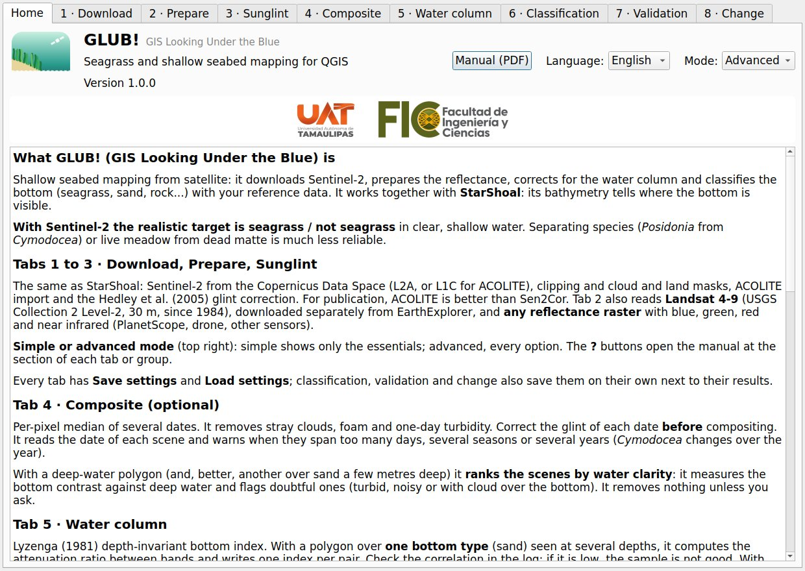
Figure 1. Home tab: short help, language selector and credits.
3. Workflow at a glance
Step
Tab
What it does
Needed?
1
Download
Search and download Sentinel-2 L2A or L1C from Copernicus.
If you do not have the images yet
2
Prepare
Clip, mask clouds and land (NDWI), write a 4-band reflectance GeoTIFF from Sentinel-2 L2A, Landsat 4-9 or ACOLITE.
Yes
3
Sunglint
Hedley et al. (2005) correction from a deep-water polygon.
When there is glint
4
Composite
Per-pixel median of several dates.
Optional
5
Water column
Lyzenga depth-invariant bottom index.
Advised
6
Classification
Depth mask, classifier, validation, report.
Yes
7
Validation
Stratified random validation points; accuracy and corrected areas from them.
For figures you will publish
8
Change
Transitions between two class maps (date 1 → date 2).
For monitoring
Simple and advanced mode, help buttons. The Home tab has a Mode selector. Simple (the default) shows only the essential options of each tab, with sensible defaults; advanced shows them all (split, block size, seed, class balance, texture, minimum probability, clean-up, signal-test settings, sampling design…). Hidden options are not lost: they keep their value, and the report lists them all. The ? buttons, in each tab and in the main groups of the classification, open this manual at the right section.
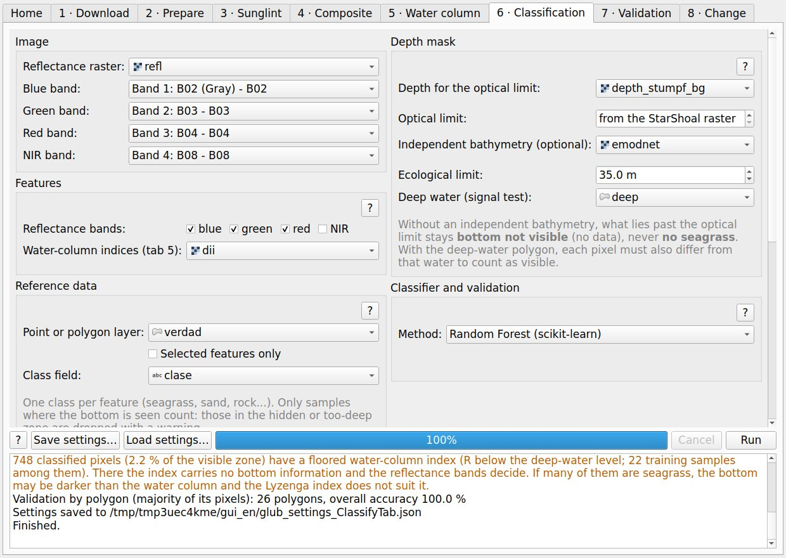
Figure 1b. Classification tab in simple mode, with the ? help buttons.
Each tab passes its result to the next one, so a normal run is: download, prepare, deglint, (composite), water column, classification and, once the map is ready, validation points for the field. StarShoal comes in before step 6 to produce the depth and trust rasters of the optical mask.
4. The window, tab by tab
4.1 Download
Give an area (a polygon layer and/or an extent drawn on the canvas), dates, level and maximum cloud cover. Search scenes needs no account; tick the ones you want and Download selected. Duplicates of the same date and tile are removed, keeping the newest processing. Choose L2A for the standard path or L1C if you will run ACOLITE.
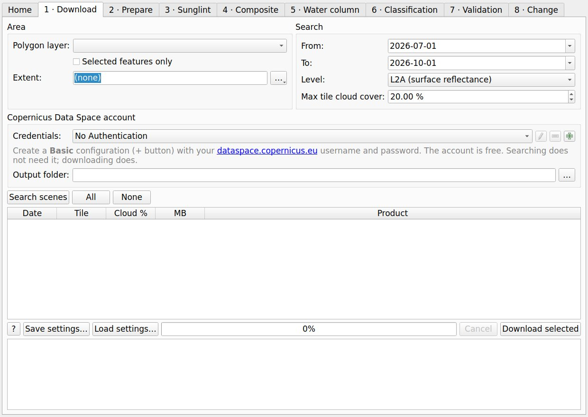
Figure 2. Download tab.
4.2 Prepare
Reads the Sentinel-2 zip without unzipping, clips it to the area and writes a GeoTIFF with blue (B02), green (B03), red (B04) and NIR (B08) at 10 m, as surface reflectance (the offset of processing baseline 04.00 onwards is applied). Clouds and shadows are removed with the SCL layer and land with NDWI. For publication, ACOLITE is advised over Sen2Cor: download the L1C, run ACOLITE (a separate program) and import its output here. Large areas are processed strip by strip, so a whole tile fits in memory.
Landsat. Choose Landsat 4-9 Collection 2 Level-2 from USGS and give the .tar bundle as downloaded from USGS EarthExplorer (a free account is needed; GLUB does not download Landsat), the unpacked folder or any file of the product. It writes the same 4-band GeoTIFF, at 30 m: SR_B2-B5 for Landsat 8 and 9, SR_B1-B4 for Landsat 4, 5 and 7, reflectance = DN × 2.75·10-5 − 0.2, clouds, shadows and snow removed with QA_PIXEL and land with NDWI. Landsat 5 reaches back to 1984, which makes long change series possible, but its 30 m pixels are coarser than Sentinel-2's 10 m. Landsat 7 after May 2003 has gaps in stripes (SLC-off), left as no data. ACOLITE also processes Landsat, and its output is imported with the ACOLITE option, which picks the bands by wavelength.
Other reflectance rasters.Other reflectance raster takes any raster with blue, green, red and near-infrared bands (PlanetScope, a drone with a NIR band, other satellites). Say which band is which and how to turn the stored values into reflectance (value × scale + offset; for PlanetScope surface reflectance stored as 0-10000, × 0.0001). It is clipped and masked with NDWI like the other sources and keeps its own pixel size. Clouds are not removed, because there is no standard cloud layer for an arbitrary raster: remove them before or leave them outside the area polygon. If the green band does not look like reflectance after scaling (median above 1.5 or below −0.05), the log warns.
Careful: SCL can label very bright shallow bottoms (white sand) as cloud, and NDWI can drop very shallow bright pixels as land. Check both masks over your site.
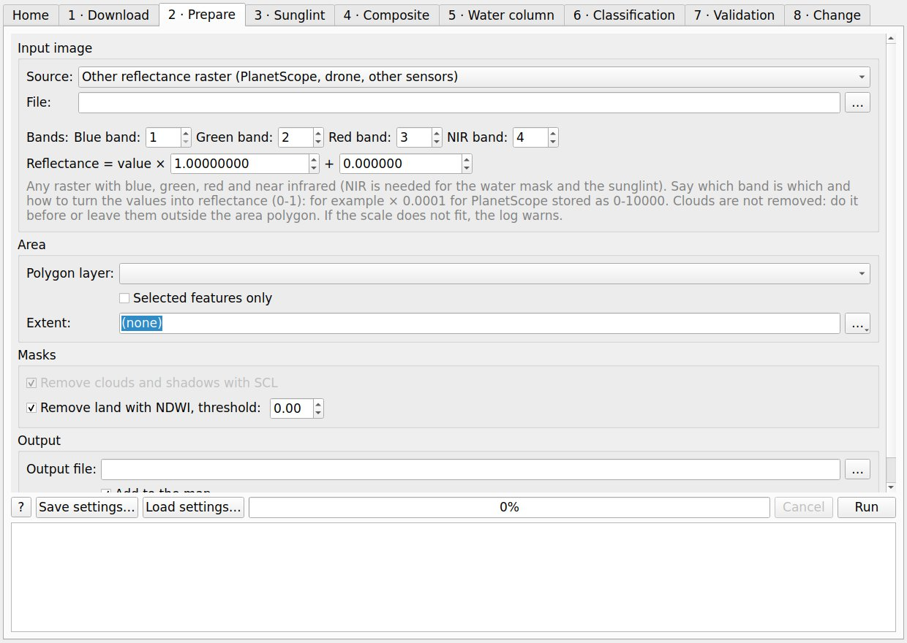
Figure 3. Prepare tab.
4.3 Sunglint
Hedley et al. (2005): over a polygon of optically deep water with some glint, each visible band is regressed against NIR and the NIR-predicted glint is subtracted. Check the R² of each band in the log: if it is low there is little glint or the sample is not good.
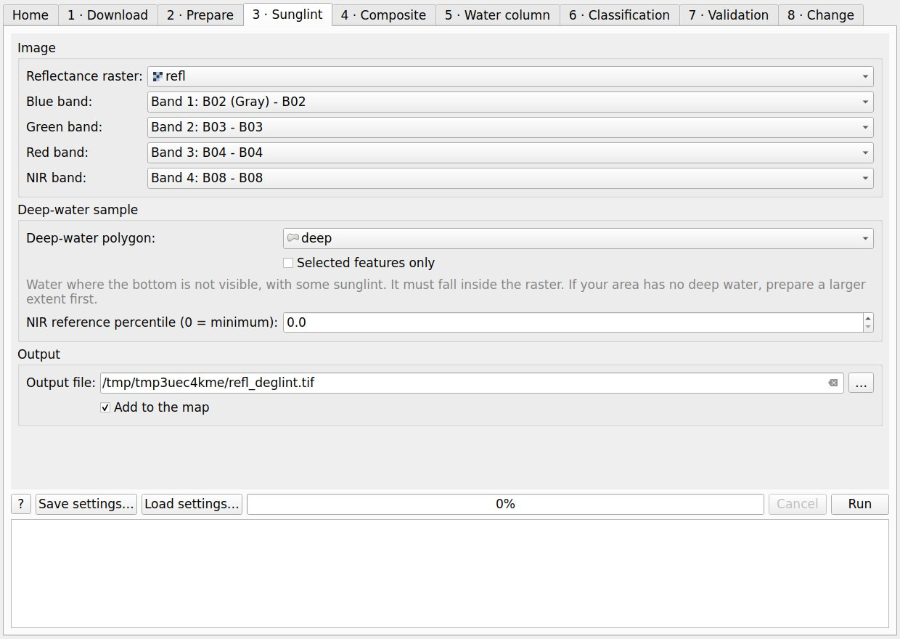
Figure 4. Sunglint tab.
4.4 Composite (optional)
Per-pixel median of several dates, resampled to the grid of the first one. It removes stray clouds, foam and one-day turbidity. A second raster counts the valid dates per pixel. The date of each scene is read and the log warns when the dates span more than a set number of days (45 by default), several seasons or several years: seagrass (Cymodocea above all) and water clarity change over the year. Nothing is removed automatically. Deglint each date before compositing.
Water clarity ranking. Before compositing (or to pick the one date to map), the scenes in the list can be ranked by how clear the water is. Give a deep-water polygon and, better, a polygon over a bright bottom (sand a few metres deep). For each scene it measures the red mean and the noise (standard deviation) of deep water and the bottom contrast: (median R over the bright bottom − deep-water mean) / deep-water sd, the larger of blue and green. It is the same quantity as the bottom-signal test of the classification, so a higher contrast means the bottom is seen deeper that day. Without the bottom polygon the ranking uses the red of deep water (more red = more sediment).
Doubtful scenes are flagged, never removed on their own: contrast below half of the best scene, the bottom polygon mostly under cloud or without data, or deep water noisier than twice the median of the scenes. Remove the flagged ones takes them out of the list if you agree. The figures go to scene_clarity.csv. These are rules of thumb to compare dates of one place, not water-quality thresholds.
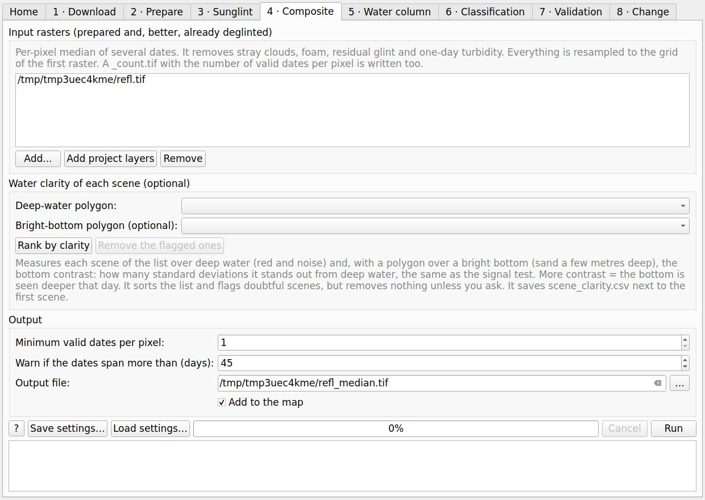
Figure 5. Composite tab.
4.5 Water column
Lyzenga (1981) depth-invariant bottom index. Over a polygon of one bottom type (usually sand) seen at several depths, it computes the ratio of attenuation coefficients of each band pair, ki/kj = a + √(a² + 1), with a = (var Xi − var Xj) / (2 cov(Xi, Xj)) and X = ln(R − R∞), and writes one index per pair, Xi − (ki/kj) Xj. R∞ is taken from a deep-water polygon (mean − k standard deviations).
Check the correlation of each pair in the log. Below about 0.7 the ratio is unreliable: the polygon has little depth range, mixes bottoms, or the band does not see the bottom.
With Sentinel-2 only blue and green reach the bottom well (red only in the first few metres), so there is usually a single useful index.
Where R ≤ R∞ the logarithm does not exist, and just above it the index is mostly noise. Instead of leaving holes, wherever R − R∞ is below a floor (one deep-water standard deviation by default) it is set to that floor, and those pixels are flagged in _floored.tif. They are deep-water noise, or a bottom darker than the water column, where the Lyzenga model does not hold. The classification warns how many classified pixels have a floored index.
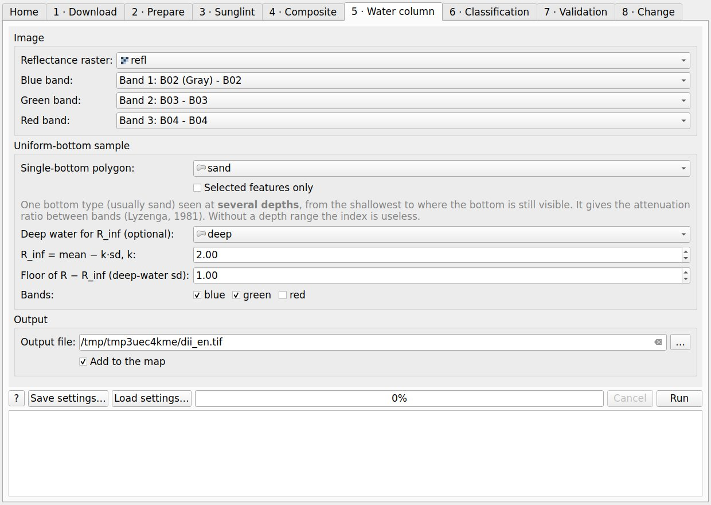
Figure 6. Water column tab.
4.6 Classification
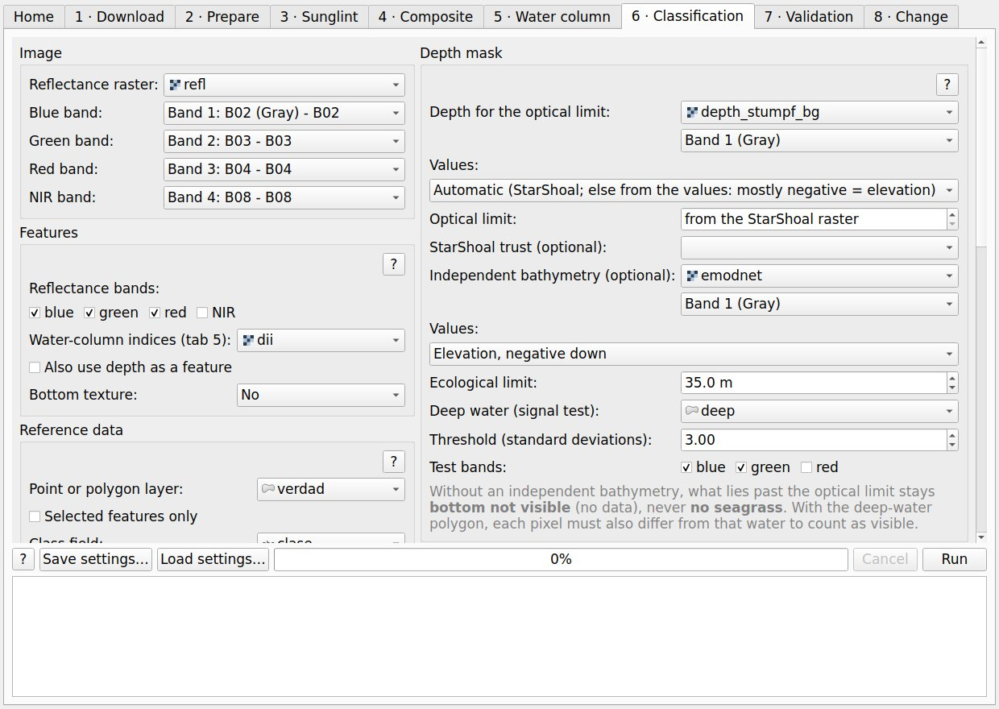
Figure 7. Classification tab.
Features. Reflectance bands (blue, green and red by default) and/or every band of the water-column index raster. Depth can be added as a feature, but it is off by default and not advised: the error of a satellite-derived depth depends on bottom colour (a dark meadow reads deeper), so it brings an error tied to the classes.
Reference data. A point or polygon layer with a class field. The pixels of one polygon always stay together in calibration or validation. Polygons can be shrunk (inward buffer) to leave out mixed edge pixels; 10 m (one pixel) is a sensible start. At most N random pixels per polygon are used (200 by default) so big polygons do not dominate.
Depth mask, three states.
State
Code
Meaning
Needs
Bottom visible
1…k
The pixel is classified.
Depth ≤ optical limit, trust = 1 and bottom signal
Bottom not visible
250
No data: seagrass may or may not be there.
Past the optical limit or without bottom signal
Too deep
251
Deeper than the ecological limit: no seagrass.
An independent bathymetry
No data
255
Land, cloud, outside the area or missing feature.
–
Optical limit: from a depth raster (StarShoal's limit is read from its metadata) and, optionally, the StarShoal trust raster (0 = extrapolated = not visible).
Bottom-signal test (advised): with a polygon of optically deep water, a pixel is visible only if it differs from that water by more than n standard deviations (3 by default) in some band. The limit then depends on the bottom: a dark meadow fades at shallower depth than sand.
Ecological limit (35 m by default; set it for your coast, it depends on water clarity): needs an independent bathymetry (EMODnet, nautical chart, multibeam). With only a satellite-derived depth, everything past the optical limit stays 'not visible', never 'too deep': an SDB cannot tell 25 m from 40 m. The sign of the depth rasters is read from StarShoal's metadata; for other rasters, 'automatic' looks at the values (mostly negative means elevation, as in EMODnet) and says so in the log. Check it, or choose it by hand.
Reference samples that fall in the hidden or too-deep zone are dropped, with a warning per class: only samples where the bottom is seen can train the classifier.
Classifier and validation.
Option
Default
Notes
Method
Random Forest
Maximum likelihood (Gaussian, numpy only) if scikit-learn is missing or chosen.
Balance classes
Off
On: every class weighs the same; rare classes are found more often but their mapped area grows. For areas, leave it off.
Split
Spatial blocks by class
Also common blocks for every class (full spatial separation) or random by feature.
Block size / validation fraction
500 m / 0.3
Blocks should be larger than the spatial correlation of your samples.
Export to polygons
Off
Also writes the map as polygons in a GeoPackage (classes.gpkg, or classes_filtered.gpkg if there is a filtered map): each patch of a class is a polygon with its class, area (ha) and perimeter (m). The outlines follow the pixel edges, not smoothed. The same is in Processing for any class or change map.
Bottom texture
Off
Adds as features the local standard deviation in 3×3 or 5×5 windows of the water-column indices (or of blue and green without them). It helps to separate patchy bottoms (fragmented meadow, rock) from smooth ones (sand) of similar colour. In a synthetic test where two bottoms had the same pixel values and differed only in their arrangement, accuracy by pixel went from 53 % to 85 % with a 3×3 window; with real 10 m pixels the gain may be much smaller, so compare the accuracy with and without it and look at its importance in the report.
Minimum probability
Off
If no class reaches it, the pixel is left 'unclassified (low confidence)', code 252, instead of forcing a class. The report gives the share of validation samples that fall there; the accuracy is then that of what the map does classify, so read both together. The probability is relative, not a calibrated confidence: try 0.5 to 0.6 and look at how much map is lost.
Majority filter / minimum mapping unit
Off
Saved as classes_filtered.tif; the raw map is kept. Only class pixels change.
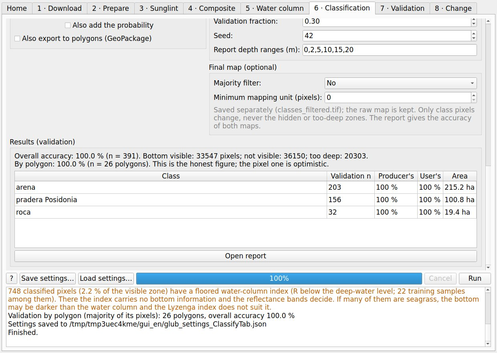
Figure 8. Results panel after a run (synthetic test scene: the 100 % accuracy is an artefact of the synthetic data, not a real result).Figure 9. Synthetic test scene: true colour (left) and classes (right): sand, seagrass, rock, bottom not visible (light grey) and too deep (dark blue).
4.7 Validation
The accuracy of tab 6 comes from reference data placed where it was possible, so its corrected areas are indicative. For figures to publish you need a probability sample: points drawn at random within each map class (stratified random sampling) and labelled without looking at the map (Olofsson et al., 2014). This tab does both halves.
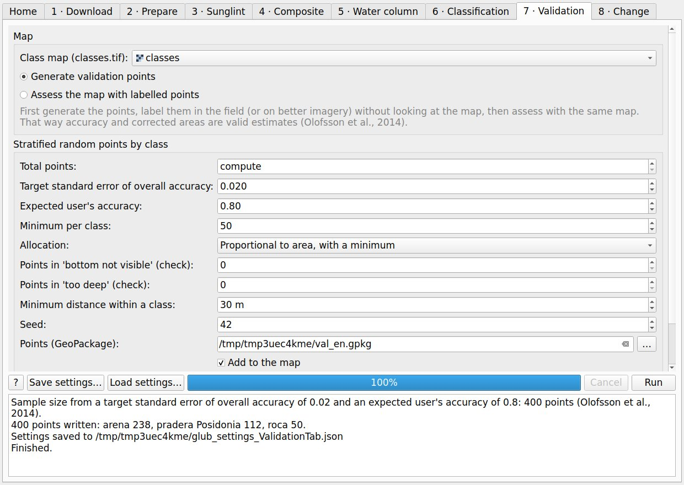
Figure 10. Validation tab, generating points.
1. Generate points.
Option
Default
Notes
Total points
compute
Computed as n = (Σ Wi Si / S(OA))², with Wi the area share of each class, Si = √(U(1 − U)) for an expected user's accuracy U and S(OA) the target standard error of overall accuracy (Olofsson et al., 2014). 0.02 with U = 0.8 gives about 400 points. Or give the total by hand.
Allocation / minimum per class
proportional, 50
Proportional to area, but every class gets at least the minimum, so rare classes have enough points for their user's accuracy. Or equal for every class.
Low-confidence zone
automatic
If the map has it (code 252), it is one more stratum, so its area can be shared out among the classes.
Mask-check points
0
A few points in 'bottom not visible' and 'too deep', to see what is really there. They do not enter the area estimate.
Minimum distance
30 m
Between points of the same class only. Map errors gather at class edges; keeping points of different classes apart would under-sample them, and in tests it biased the corrected areas.
The output is a GeoPackage with one point per pixel centre and the fields point_id, stratum, map_class, x, y, lon, lat (for the GPS), an empty ref_class and notes, plus a CSV with the strata. Write in ref_class the class names of the map (case and spaces do not matter). For a change map, the label is the transition as the map names it (see map_class): for example seagrass → sand (-> also works) or seagrass (no change).
2. Label them. In the field (diving, drop camera) or on better imagery, write in ref_class what is really there, with the same names as the map classes. Do not look at the map while labelling. Visit every point if you can: if the ones left out are the hard ones (deep, far), the estimates are biased.
3. Assess the map. With the same map and the labelled points, the report (assessment.html) gives the strata, the confusion matrix in point counts, the overall accuracy with its 95 % interval, user's and producer's accuracy weighted by area, and the estimated area of each class with its 95 % interval. Reference labels the map does not have are kept as extra classes (all of their area comes from map errors). Points in the mask zones go to a separate table: seagrass in 'too deep' means the ecological limit is too shallow.
Check with the synthetic test scene: over 20 repeated draws of 400 points, the 95 % intervals of the corrected areas held the true area in 53 of 60 cases (88 %), slightly below the nominal 95 %, as is usual with rare classes and small samples; the mean error by class was below 1 ha.
4.8 Change
Compares two class maps of the same place, date 1 (before) and date 2 (after). Classes are matched by name, so both maps need the same class names (the codes may differ); the second map is put on the grid of the first. Only pixels where the bottom is classified on both dates are compared: if a pixel is 'bottom not visible', 'too deep' or 'low confidence' on either date it is not comparable (code 250), so turbid water on one day is not taken for meadow loss.
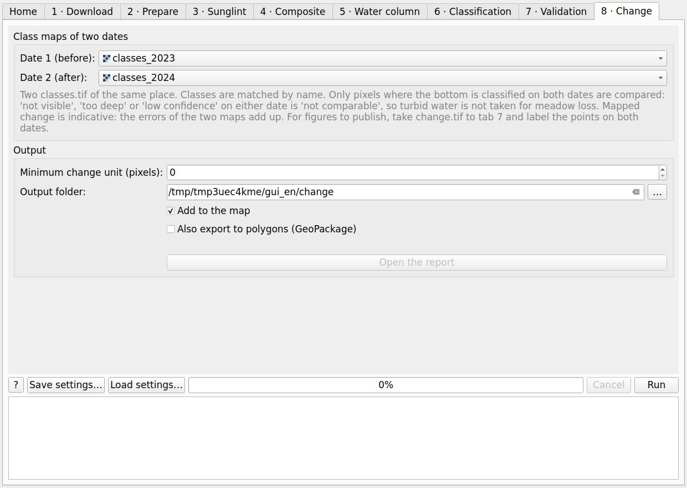
Figure 11. Change tab.
Outputs: change.tif, one code per transition (seagrass loss in red, gain in green, 'no change' in a light tone of each class) with its QGIS style; change_matrix.csv, the transition matrix in hectares; change_report.html, with the comparable zone, the matrix and gains, losses and net change by class; and, with a minimum change unit, change_filtered.tif, where change patches smaller than N pixels are merged into the neighbouring patch. Optionally, the change map can also be exported to polygons (change.gpkg, or change_filtered.gpkg with a minimum change unit), one per patch with its transition and area.
Mapped change is indicative. Subtracting two maps adds up the errors of both: if each map is right in a share OA of its pixels and the errors are independent, about 1 − OA1·OA2 of the pixels can disagree by error alone (with two maps at 85 %, about 28 %). The report gives that figure from the validation accuracies stored in the maps and warns when the mapped change is smaller. Large gains and losses with a small net change usually mean map noise. For change areas to publish, take change.tif to tab 7: the points are drawn by transition class, each one is labelled on both dates (for example on archive imagery or with field records), and the assessment gives the change areas with their intervals, as proposed by Olofsson et al. (2014).
5. Outputs
File
Content
classes.tif (+ .qml)
Class codes 1…k, 250 bottom not visible, 251 too deep, 252 low confidence (if a minimum probability is set), 255 no data; colour table and QGIS style.
classes_filtered.tif
Only if the majority filter or the minimum mapping unit is on.
probability.tif
Band 1: highest class probability; then one band per class. Relative, not a calibrated confidence.
legend.csv
Codes, classes, colours, pixels and hectares.
samples.csv
Every training/validation pixel: coordinates, class, set, prediction, depth and feature values.
report.html
Settings, warnings, mask, accuracy and areas (section 6).
validation_points.gpkg, *_strata.csv
Validation points to label and their strata (tab 7).
assessment.html, assessment_points.csv
Assessment with the labelled points (tab 7).
*_dii.tif, *_floored.tif
Water-column indices and the floored-pixel mask.
*_median.tif, *_count.tif
Composite and valid dates per pixel.
classes.gpkg, change.gpkg
Maps as polygons with class, area and perimeter (optional).
glub_settings_*.json
Settings of the run, to repeat it.
change.tif, change_matrix.csv, change_report.html
Change between two maps (tab 8).
scene_clarity.csv
Water clarity figures and rank of each scene.
6. Reading the report
Where the map speaks: pixels and hectares visible, not visible and too deep, and how many pixels the bottom-signal test removed.
Accuracy by polygon: each validation polygon votes with the majority class of its pixels. This is the honest figure: the pixels of one polygon are not independent.
Accuracy by pixel: confusion matrix (rows = map, columns = reference), producer's and user's accuracy and F1. Optimistic with polygons. Kappa is not given (Pontius and Millones, 2011).
Area corrected for map errors (Olofsson et al., 2014), with 95 % intervals. Strictly valid only for a probability sample of reference data; with points placed where it was convenient, take it as indicative and use tab 7 for figures to publish.
Low confidence (with a minimum probability): how many validation samples fell below it, by reference class. The accuracy is that of what the map classifies; in the corrected areas the low-confidence zone is one more stratum.
Accuracy by depth: uses the independent bathymetry when given (an SDB reads dark bottoms deeper). If accuracy falls with depth, the water column is still driving the classes.
Filtered map (if any): accuracy of both maps on the same samples. Filtering usually helps inside polygons and hurts at edges and small real patches.
Feature importance (Random Forest): a rough guide only.
7. Good practice
Use images from calm, clear days (summer in the western Mediterranean) and as close as possible to the date of the reference data.
Draw the deep-water polygon where no bottom at all is seen. Over a bottom that still shows faintly, the deep-water statistics shift and the signal test becomes too strict.
Draw the uniform-bottom polygon over one bottom type from the shallowest to where it is still visible.
Use several reference polygons per class spread over the area, not a few big ones. With few polygons per class, accuracies move a lot with one polygon.
For areas you will publish, draw the validation points with tab 7 (stratified random by map class), independent of the training data, and label them without looking at the map.
Keep the raw map and report both maps if you filter.
8. Limitations
Optical remote sensing only works in clear, shallow water; turbidity shortens the visible zone a lot.
Dark bottoms (seagrass, macroalgae, rock with epiphytes, dead matte) look alike, more so with more water above.
10 m pixels: small patches and meadow edges are mixed pixels.
The lower edge of meadows is usually beyond the optical limit.
Version 1.0.0 has been tested with synthetic data in QGIS 3.34 on Linux; tests with real field data, on Windows and on QGIS 4 are pending.
9. Processing tools
Saving the settings of a run. Every tab has Save settings… and Load settings… buttons next to Run. They write or read a JSON file with every option of the tab, the layers by their file path. Classification, validation and change also save it on their own next to their outputs (glub_settings_ClassifyTab.json, glub_settings_ValidationTab.json, glub_settings_ChangeTab.json), so months later you can see, and repeat, exactly what produced a map. On loading, a layer already in the project is reused, otherwise its file is added; if the file has moved, the log says so and you choose it by hand.
Every step is also a Processing tool (group GLUB), for models and batch runs:
Hedley, J. D., Harborne, A. R. and Mumby, P. J. (2005). Simple and robust removal of sun glint for mapping shallow-water benthos. International Journal of Remote Sensing, 26(10), 2107–2112.
Lyzenga, D. R. (1981). Remote sensing of bottom reflectance and water attenuation parameters in shallow water using aircraft and Landsat data. International Journal of Remote Sensing, 2, 71–82.
Olofsson, P., Foody, G. M., Herold, M., Stehman, S. V., Woodcock, C. E. and Wulder, M. A. (2014). Good practices for estimating area and assessing accuracy of land change. Remote Sensing of Environment, 148, 42–57.
Pontius, R. G. Jr. and Millones, M. (2011). Death to Kappa: birth of quantity disagreement and allocation disagreement for accuracy assessment. International Journal of Remote Sensing, 32(15), 4407–4429.
Vanhellemont, Q. and Ruddick, K. (2018). Atmospheric correction of metre-scale optical satellite data for inland and coastal water applications. Remote Sensing of Environment, 216, 586–597. https://doi.org/10.1016/j.rse.2018.07.015
11. How to cite and credits
Ibarra-Marinas, D., Fenollar-Rueda, A., García-García, A. M. de J., Bellido-Solano, Á., Mata-Chacón, D., Serrano-Vicente, M. and Mora-Olivo, A. (2026). GLUB (GIS Looking Under the Blue) (version 1.0.0) [QGIS plugin]. Universidad Autónoma de Tamaulipas. https://github.com/adanielibarra/glub. Zenodo DOI to be added on release. The repository carries a CITATION.cff file (GitHub shows it as 'Cite this repository') and a .zenodo.json file for the Zenodo record.
Authors: Daniel Ibarra-Marinas1, Alejandro Fenollar-Rueda2, Ana Mónica de Jhesú García-García1, Ángela Bellido-Solano3, Dulce Mata-Chacón4, Marta Serrano-Vicente5, Arturo Mora-Olivo1. 1 Facultad de Ingeniería y Ciencias, Universidad Autónoma de Tamaulipas · 2 Universidad de Alicante · 3 Universidad Complutense de Madrid · 4 Instituto Español de Oceanografía (IEO-CSIC) · 5 Universidad de Murcia. Contact: Daniel Ibarra-Marinas, daniel.ibarra@uat.edu.mx · ORCID 0000-0003-3683-4456 · GitHub adanielibarra.
Data: contains modified Copernicus Sentinel data, served by the Copernicus Data Space Ecosystem. ACOLITE is developed by RBINS (GPL-3) and is not part of this plugin.